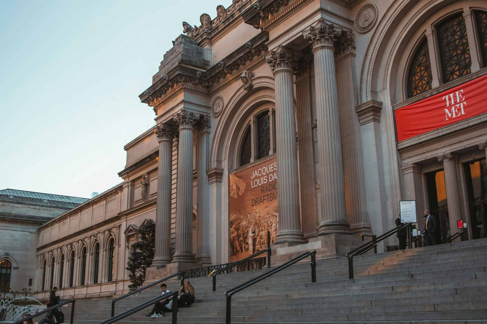
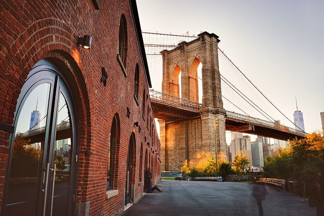
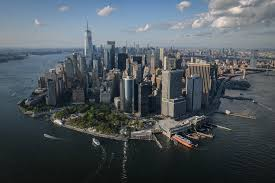

5 Must-See Stops in New York City
There’s nothing quite like New York City. You’ve heard it all — The City That Never Sleeps, The Concrete Jungle Where Dreams Are Made Of, and of course, The Greatest City in the World. Today, we’re breaking down five of the best spots to stop in the Big Apple. Are they overrated? You’ll have to check them out for yourself!

1. The Metropolitan Museum of Art
“The Met,” as it’s affectionately called, is a cultural landmark of the United States. Located about halfway up Central Park on Fifth Avenue’s famed Museum Row, it’s surrounded by other iconic institutions like the Solomon R. Guggenheim Museum, El Museo del Barrio, and the Cooper Hewitt National Design Museum.
If you don’t spend all day getting lost in art, take a relaxing stroll through Central Park on your way in or out.

2. DUMBO, Brooklyn
Next up, we’re crossing the East River into Brooklyn. From DUMBO, you’ll find one of the most iconic views in the city — the Manhattan Bridge perfectly framed between historic brick buildings.
Be sure to stop here and snap a quick photo… or a hundred.

3. The Battery
Back to Manhattan we go — and no, we’re not suggesting the Empire State Building.
Located at the southern tip of Manhattan near the Financial District (FiDi), The Battery offers stunning harbor views and a breath of fresh air. Take a walk through Battery Park, enjoy the waterfront, and soak in the scenery.
Want more destination inspiration? Check out Travel for more!